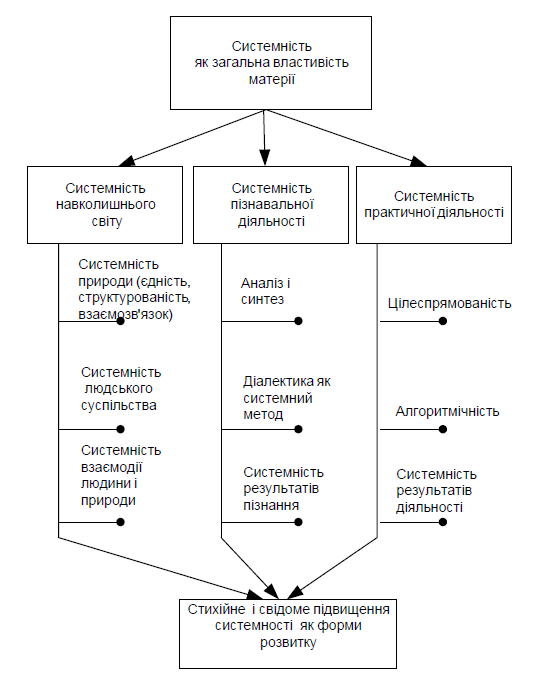

1.
Системність світуНавколишній світ і діяльність людини з точки зору сучасної на
уки мають системний характер. Системність – це загальна властивість об’єктивно існуючої єдності світу, його структурованості і взаємозв’язку. Системність як загальна властивість світу виявляється не тільки в системності матеріального світу, але й системності пізнавальної та практичної діяльності. Системність пізнавальної діяльності полягає в тому, що наші знання структуровані, являють собою ієрархічну систему взаємопов’язаних моделей світу. Системність практичної діяльності полягає у використанні взаємозв’язаних процедур для перетворення навколишнього середовища й людини, у врахуванні різних сторін діяльності та всіх можливих її наслідків. Сторонами системності є системність матеріального світу, системність пізнання й системність практичної діяльності.Єдність світу
– поняття, що пояснює світ як одне ціле, яке має одну першооснову і підпорядковане одним законам. Єдність світу у філософії обґрунтовується його матеріальною або духовною основою. Матеріалістичний напрямок філософії вважає, що єдність світу полягає в його матеріальній основі, а саме – первинним є природа, буття, матерія, а духовне – вторинне, продукт матеріального. Матерія існує поза свідомістю і відображається, відбивається у ній. Наші відчуття, думки, знання - це продукт роботи мозку. Ідеалістична філософія розглядає першоосновою світу дух, ідею, свідомість, а буття, природу, матеріальне як вторинне. Напрямки ідеалізму відрізняються тим, чи вважають ідею об’єктивно існуючою чи ні, визнають існування абсолютної ідеї як першооснови світу , чи зводять ідею до людської свідомості, свідомості окремих суб’єктів. Напрямки філософії в тій чи іншій мірі визнають можливість пізнання світу.Ми стоїмо на матеріалістичній точці зору і вважаємо, що єдність світу полягає в його матеріальності. Наукові дослідження, вивчення явищ на рівні елементарних частинок матерії і вивчення космічних об’єктів, віддалених від нас величезними відстанями в тисячі й мільйони світлових років, показують, що основою світу є одне начало: матерія, яка може мати найрізноманітніші форми. Нескінченна світобудова як у великому, так і в малому, як в матеріальному, так і в духовному підпорядкована одним і тим же законам. Ці закони діють на різних рівнях і зв’язують все у світі в одне ціле. Єдність світу полягає в єдності всіх форм існування матерії і в таких проявах, як, наприклад, простір і час. Як показано в теорії відносності, час взаємозв’язаний з рухом матеріальних тіл. Він може протікати по–різному в тілах, що рухаються одне відносно іншого. Простір також змінює свої властивості залежно від наявності матеріальних тіл, від маси тіла, яке знаходиться в даній точці простору. Біля тіл з великою масою змінюється метрика простору, проходить його викривлення. Біля масивних тіл також змінюється протікання часу. Ці закономірності показують, що світ єдиний у всіх його проявах і всі властивості матерії взаємнозв’язані. Єдиний не тільки матеріальний, а і духовний світ. Духовний світ нерозривно зв’язаний з матеріальним. Єдність матеріального і духовного полягає в тому, що духовне є відображенням певних закономірностей матеріального світу у свідомості людей.
Структурованість світу полягає в його дискретності та впоряд
кованості. Матеріальний світ складається з величезної кількості різноманітних дискретних частин. Ці частини утворюють певні структури, які розміщуються на різних рівнях. Це такі рівні, як, наприклад, рівень елементарних частинок, атомів, молекул, організмів, популяції, суспільства, планети, планетних систем, галактики, метагалактики. Елементарні частинки світобудови, а їх тепер відомо понад 30 (а враховуючи віртуальні, короткоживучі частинки – понад 100), утворюють атоми, які є основою будови всіх стабільних об’єктів навколишнього світу.Елементарні частинки
(фотони, протони, електрони, мезони, баріони та ін.) також мають свою структуру. Є всі підстави стверджувати, що вони складаються з частинок матерії, що мають назву кварків. Існує обмежене число кварків з такими характеристиками як маса, електричний та баріонний заряди, дивність, забарвлення, спін та ін. Вони, вступаючи у взаємодію, групуючись утворюють всі інші “елементарні” частинки. З дискретними формами матерії нерозривно зв’язані неперервні форми, а саме електричні, магнітні, гравітаційні поля, поля ядерних та слабких взаємодій. Перервні й неперервні форми матерії також зв’язані між собою, оскільки носіями цих полів є певні дискретні частинки, які у взаємодії виявляють квантові й хвильові властивості.Дискретні утворення матерії
, будучи цілісними, незмінними, вступають у взаємодію, не втрачаючи своєї індивідуальності. У хімічних реакціях атоми залишаються незмінними, не руйнуються. У біологічних процесах молекули виступають як ціле. Клітини живих організмів, окремі органи діють як певні цілісні неподільні структурні одииці. Кожен організм у зовнішньому середовищі також виступає як одне ціле. Тобто ми бачимо, що світ не є хаосом , а являє собою закономірно організовану ієрархію систем. Під структурованістю світу ми розуміємо якраз цю впорядкованість на різних рівнях і закономірні зв’язки між цими впорядкованими структурними рівнями. Причому різні рівні структурованості світу не зводяться до інших. Рівень атомів не зводиться до рівня елементарних частинок. Рівень організмів живого світу не зводиться до рівня окремих органів цих організмів тощо. Кожному рівневі властиві свої закономірності, свої взаємодії, свої характеристики.Структурованість властива не тільки матеріальним об
’єктам, але й в іншим сторонам матеріального світу, наприклад формам руху матерії. Ми знаємо такі форми руху, як механічна, теплова, хімічна, біологічна. Ці форми взаємозв’язані, вони знаходяться на різних рівнях структурованості світу, але вони також не зводяться одна до одної. Взаємозв’язок об’єктів матеріального світу полягає у тому, що всі об’єкти матеріального світу взаємозв’язані між собою. Який би об’єкт ми не розглядали, він має безліч зв’язків з іншими об’єктами.Жоден об
’єкт не може бути ізольований від великої кількості інших об’єктів. У сукупності всі об’єкти створюють певну цілісність, яка і є навколишнім світом. Взаємозв’язок існує також між матеріальними об’єктами, духовною сферою. Всі матеріальні об’єкти впливають на духовну сферу. Духовна сфера також нерозривно зв’язана і впливає на матеріальний світ. Взаємозв’язок матеріального і духовного досить складний, вивченням його займається цілий ряд наукових дисциплін.Отже у світі все взаємно пов
’язано і взаємно зумовлено. Гарно про це сказав поет Євтушенко:– просто пуховая,Сережка ольховая
Разломаешь её
– и всё будет наверно не так,Видно жизнь не такая уж вещь бестолковая
,Если в ней ничего не похоже на просто пустяк
.Системність пізнання полягає у тому
, що наші знання про світ являють собою взаємопов’язану систему відомостей, уявлень та моделей навколишнього світу. Головними ознаками системності знань є їх структурованість, цілісність, взаємозв’язок.Людина живе у складному світі і пізнає
, вивчає його для того, щоб забезпечити й покращити своє існування. Результати свого пізнання вона відображає у вигляді певних ідей, моделей, уявлень. Ці ідеї та моделі узагальнюються, об’єднуються і стають основою виникнення наукових знань. У сучасному суспільстві знання вже досягли такого рівня, що могутність людини має глобальний, планетний рівень. Людина може розв’язати всі проблеми, які виникають перед нею.Але до знань необхідно підходити системно
, враховувати всю їх сукупність у їх взаємозв’язку. Найбільш загальною наукою щодо оточуючого світу, місця людини в ньому є діалектика. Вона служить методологічною основою теорії систем.Системність пізнання має різні рівні
. Початкові знання завжди мають нечіткий, розпливчатий характер. Це знання окремих фактів, явищ, закономірностей не об’єднані між собою. Більш високий рівень системності передбачає об’єднання знань у певній теорії, теоретичне розуміння закономірностей, пояснення фактів з однієї точки зору, на одній основі, відшукання спільного, того, що об’єднує різноманітні факти. Важливе місце у системності знань відіграє математика. Як це не дивно, але математика - єдина мова яку “розуміє” природа, на якій ми можемо ставити їй запитання і одержувати відповіді. Закономірності, одержані за допомогою математики на основі фундаментальних законів природи завжди збуваються. Ейнштейн писав, що найбільш дивне в природі є те, що її можна пізнати. За твердженням Менделєєва, “в кожній дисципліні є стільки науки, скільки в ній математики”.Математично виражені закономірності світу пояснюють явища
, які без математики є незрозумілими. Записавши рівняння певного процесу, ми про нього знаємо набагато більше, ніж в результаті проведення маси дослідів та вимірювань. Математично виражені закономірності мають найбільш універсальний характер, вони найбільш інформаційні, компактні. Наприклад, усі закони фізики, закони, які описують явища матеріального світу, можуть бути записані на одному аркуші паперу. Таких універсальних законів не більше 20. Це: рівняння механіки з поправками теорії відносності, рівняння неперервності та гідродинамікирівняння електромагнітного поля, гравітаційного поля, рівняння квантової механіки, рівняння слабких та сильних взаємодій елементарних частинок матерії тощо.Системність як загальна характеристика матерії існує у самій природі і проявляється у системності пізнання та системності мислен
ня. Для початкових знань характерна стихійна, неусвідомлена системність. Людина, навіть на перших етапах розвитку суспільства, сприймала світ як одне ціле і відшукувала в ньому найбільш загальні закономірності. Здобуваючи нові знання, людство переходило на більш високий рівень системності, оснований на знанні законів розвитку природи й суспільства. Навчання - також процес підвищення системності знань. Вивчаючи кожну наукову дисципліну, ми не тільки збіль- шуємо кількість наших знань, але і пізнаємо зв’язки, які існують між окремими явищами. Знання наші об’єднуються в одну систему, що дозволяє нам діяти більш системно, вирішувати все складніші й склад- ніші проблеми.Мислення людини полягає не тільки у знанні
, а також у відображенні в свідомості окремих закономірностей навколишнього світу, в об’єднанні всіх проявів навколишнього світу в одне ціле. Мислення дозволяє розуміти процеси, що відбуваються навколо нас. Для пізнання та мислення характерні процеси аналізу й синтезу. Аналіз - це про-цес розчленування цілого на частини (дійсне чи уявне) й вивчення окремих частин, синтез - це об’єднання частин в одне ціле, розуміннятого, як працює ціле. Мислення має синтетичний характер, воно направлене на об’єднання окремих явищ, фактів.Системність практичної діяльності полягає у тому
, що ця діяльність, як і сам світ та його пізнання, завжди має системний характер. Ознаками системності діяльності, крім розглянутих више загальних ознак, є підпорядкованість діяльності певній цілі (цілеспрямованістьта алгоритмічність. Всяка діяльність завжди має ціль. Ціль діяльності - це майбутній бажаний ідеальний результат діяльності. Людина виконує певну роботу, завжди розуміючи, для чого вона це робить і що хоче одержати в результаті. Діяльність може мати одну ціль або їх сукупність. Певним цілям підпорядковані всі ступені діяльності, окремі її кроки. Цілі можуть створювати ієрархію, в якій існують проміжні цілі й цілі більш високого рівня.Алгоритмічність діяльності полягає у тому
, що всяка діяльність складається з окремих кроків, які виконуються у певній послідовності, відповідають певним правилам. Поняття алгоритм уперше введене в математиці. Воно означає чітку послідовність наперед заданих кроків, виконаних за певними правилами. В обчислювальній техніці алгоритми виконуються автоматично. Діяльність людини також має алгоритмічний характер, вона складається з певних елементарних дій, які завжди виконуються в одному, наперед встановленому порядку. Ми не завжди усвідомлюємо алгоритмічність діяльності. Але яку б роботу ми не взяли, вона завжди здійснюється у певному порядку, підпорядкова- на певним правилам. Наприклад, ми ходимо, граємо з м’ячем, стрибаємо, розмовляємо тощо, при цьому ми виконуємо певну послідовність дій, які виконуємо автоматично, практично без контролю нашою свідомістю. Послідовність цих кроків і є алгоритмами. Алгоритмічність властива всякій діяльності. Творча діяльність людини також має певні алгоритми. Ці алгоритми можна вивчити, зрозуміти, змоделювати, наприклад, вже створені програми гри в шахи для комп’ютера. У цих програмах є певні алгоритми оцінки ситуацій, вибору рішення. Сучасні комп’ютерні програми досить досконалі і виграють у шахи навіть у чемпіона світу. Звичайно алгоритми вирішення задач комп’ютером і людиною різні, але практика створення вказаних програм показує, що такий складний процес мислення, як гра в шахи, може бути алгоритмізований. Алгоритмізації піддаються також інші процеси творчої діяльності людини. Наприклад, багато етапів створення музики вже введено в комп’ютерні програми. Розроблені й опубліковані в літературі алгоритми раціоналізаторської та винахідницької роботи і багато інших.Написання курсової роботи студентами
, розробка проектів будівель архітектором та інша діяльність здійснюється за певними правилами, в певному порядку, тобто за певними алгоритмами. Системність мислення і практичної діяльності людини проявляється у всьому нашому житті. З розвитком науки системність діяльності підвищується. Приклади, наведені вище, показують важливість си- стемного мислення та системності діяльності. У міру розвитку окремої людини та суспільства системність діяльності підвищується. Це можна проілюструвати і при вирішенні транспортних задач. Розглянемо для прикладу задачу керування рухом транспорту. На початку розвиткуранспортних засобів окремі екіпажі рухались незалежно і проїжджали по дорогах, перехрестях доріг, як їм було зручніше. Пізніше для керування рухом були введені певні правила. Спочатку з’явились світлофори. Наступним кроком було об’єднання світлофорів, розміщених на одній вулиці, та організація їх спільної роботи в режимі “зеленої хвилі”. Подальшим кроком підвищення системності керування рухом стала автоматизація керування транспортними потоками по всьому місту.Ще один приклад підвищення системності можна проілюстру
вати, розглядаючи розробку проектів транспортних коридорів в Україні. Це транспортні коридори Європа – Азія, Південь - Північ , Середня Азія - Європа. Старі технології проектування, коли послідовно вирішується завдання розміщення траси транспортної магістралі на території, розробляються проекти мостів, дамб, інших інженерних споруд вимагають декількох років роботи (від 3 до 10). Проектування на основі сучасних геоінформаційних технологій дозволяє в проекті врахувати не тільки саму трасу магістралі, а різноманітні екологічні, геологічні, соціальні фактори, деталі інфраструктури: розміщення кафе, кемпінгів, заправок, ремонтних майстерень уздовж траси магістралі та ін. При цьому в проект закладається технологія будівництва з урахуванням підприємств, які виготовляють будматеріали, з вивіреним до хвилин графіком підвезення матеріалів до місця майбутнього будівництва, контролем якості матеріалів і їх відповідності міжнародним стандартам. Розробка проекту здійснюється протягом 4 – 6 місяців. Отже підвищення системності діяльності в даному прикладі розробки проекту дозволяє не тільки підвищити якість його виконання, а й зменшити витрати часу.Взаємозв
’язок сторін системності показано на рис. 1.
Рис
. 1 - Сторони системності та їх взаємозв’язок
2.
Зміст предмета “Основи теорії систем і системного аналізу”Вивчаючи будь
–яку наукову дисципліну, в першу чергу необхідно виділити та чітко визначити об’єкт та предмет вивчення.Об
’єкт наукової дисципліни – це те, на що направлене вивчення, вибрана для вивчення частина зовнішньої реальності. Об’єктом теорії систем та системного аналізу є матеріальні та ідеальні системи навколишнього світу. Предмет науки (предметна область) – це ті сторони, зв’язки, відношення об’єкта, які вивчаються даною наукою. Системний аналіз - науковий напрямок, пов’язаний з розробкою методів вирішення проблем природного характеру. Предметом теорії систем та системного аналізу є вивчення великих систем навколишнього світу на основі системного підходу, вивчення внутрішніх і зовнішніх, найбільш загальних характеристик систем, розробка методів аналізу систем та методів вирішення проблем, що виникають у цих системах під час практичної діяльності людини. Системний аналіз є методологічною науковою ди- сципліною. Методологічна дисципліна означає, що основним напрямком її є розробка методів аналізу складних систем.Розглянемо головні поняття дисципліни
.Теорія систем
- це область наукового знання про навколишній світ як сукупність систем різної складності й різного рівня, які взаємодіють між собою. Теорія систем є загальнотеоретичним підходом, заснованим на методах діалектики, використанні знань філософії, прикладної математики, теорій пізнання та інших наукових дисциплін. Вона вивчає закономірності функціонування, взаємодії і розвитку великих систем.Системний аналіз
– це методологічна дисципліна, заснована на истемному підході. Вона об’єднує методи вивчення систем різної складності й призначення, розробляє ці методи, узагальнює їх, дає практичні рекомендації для їх використання. Системний аналіз застосовується для підготовки й обґрунтування шляхів вирішення складних проблем політичного, соціального, військового, економічного, технічого характеру. Системний аналіз – це прикладна діалектика.Головна процедура системного аналізу
– побудова узагальнених моделей, в яких відображені закономірності реальної ситуації. Моделі системного аналізу відображають структуру, взаємозв’язки у складних системах, реальну ситуацію та проблеми, які в них виникають. За допомогою створених моделей досліджують системи й знаходять шляхи вирішення складних проблем практичної діяльності людини. Технічна основа системного аналізу – інформаційні системи, обчислювальна техніка і сучасні методи керування.Системний аналіз вивчає такі питання
:·
утворення цілого;·
побудова цілого;·
зростання і розвиток цілого;·
відношення між цілісною системою та іншими системами;·
відношення між системою та метасистемою, великою зовніш-ньою системою
, до складу якої вона входить.3.
Цілі системного аналізуЦілями системного аналізу є вивчення загальних закономірнос
тей складних систем різної природи й характеру. Практична направленість системного аналізу полягає у вирішення непростих проблем, що виникають у результаті діяльності людини. Спеціалісти із системного аналізу вивчають процеси у складних системах, аналізують результати, до яких приводять ці процеси, оцінюють перспективи розвитку систем. Їх завданням є прогнозування можливих сценаріїв розвитку, запобігання небажаним явищам та катастрофам, які можуть виникнути в результаті діяльності людини, а також внаслідок природних процесів розвитку систем та їх взаємодії між собою. Системний аналіз є основою прийняття рішення у складних ситуаціях, коли ефективність цих рішень неоднозначна і оцінити її важко. Отже системний аналіз розробляє наукові методи вирішення складних проблем у системах навколишнього світу. Він виступає як каркас, що об’єднує методи і знання для вирішення проблем. Головними методами системного аналізу є побудова моделей систем різного рівня і складності та аналіз систем за допомогою побудованих моделей [1 - 4].Завданнями системного аналізу займається Міжнародний інсти
тут прикладного системного аналізу ( International Institute for Applied Systems Analysis –IIASA), створений в 1972 р. Ціллю досліджень, які виконуються в цьому інституті, є розробка методів прогнозування і оцінки соціальних та інших аспектів науково-технічного прогресу. В ньому вивчають проблеми методології системного аналізу, проблеми економіки, екології, сільського господарства, енергетики, глобального моделювання, інформатики, дослідження міст, водних та лісових ресурсів, транспорту, регіонального розвитку та ін. Методи системного аналізу широко використовують у керуванні й зв’язку [5, 6], організації виробництва [7], керуванні матеріальними потоками, резервами [8] та в інших напрямках діяльності.Проблеми системного аналізу прийнято поділяти на глобальні й універсальні
. Глобальні проблеми мають загальнопланетний, загальнолюдський характер. Універсальні проблеми - це проблеми локальних систем чи мікросистем, таких як проблеми розвитку міст, великих підприємств, окремих галузей промисловості тощо. Зростання населення у світі, збільшення кількості великих міст і їх розмірів, прискорення темпів розвитку науки й техніки ведуть не тільки до розширення дії людини на середовище, в якому вона проживає, але і до змін у характері втручання людини в природні процеси. Дія людини на природу сьогодні досягнула рівня, який за масштабами може бути порівняний з дією найбільш могутніх сил самої природи. Існує загроза в незворотних змінах у земній атмосфері, порушень в головному механізмі підтримання та забезпечення життя на планеті, повного вичерпання мінеральних ресурсів, невідновних втрат природних умов життя майбутніх поколінь.Системний аналіз засновується на системному підході
, а також на ряді математичних дисциплін та сучасних методах керування. Системний підхід – це напрямок дослідження, вивчення світу, в основі якого лежить розгляд об’єктів як системи, орієнтація на розкриття цілісності об’єкта, виявлення різноманітності зв’язків у ньому і приведення їх до єдиної теоретичної картини.Основними принципами системного підходу є
:1.
Принцип взаємозв’язку - система вивчається як частина певної макросистеми. Вона зв’язана безліччю зв’язків з іншими системами, взаємодіє та існує в єдності з ними .2.
Принцип багатоплановості – система як деяка самостійна одиниця вивчається з різних сторін зі своїми особливостями.3.
Принцип багатомірності, який полягає в тому, що вивчаються різні характеристики систем, які об’єднують в групи (кластери): об’єкт описується як сукупність деяких характеристик та взаємозв’язків між ними.4.
Принцип ієрархічності – система розглядається як складна структура з різними рівнями, між якими встановлюються певні зв’язки.5.
Принцип різнопорядковості - полягає у тому, що різні ієрархічні рівні системи породжують закономірності різного порядку. Одні закономірності властиві тільки всім елементам або деякій групі елементів, а інші тільки окремим елементам.6.
Принцип динамічності – система розглядається в рухові й розвитку.Відповідно до системного підходу всякий об
’єкт виникає та існує в рамках деякої великої системи. Зв’язки між об’єктами і системою є суттєвими основами виникнення, існування та розвитку об’єкта і системи в цілому. Практичне значення системного аналізу полягає в тому, що він є методологією і практикою цілеспрямованого перетворення як самої людини, так і навколишнього світу.Контрольні запитання
У чому полягає системність навколишнього світу?1.
2.
Які ознаки системності властиві діяльності людини?3.
Чому виникає необхідність системного вирішення завданьпрактичної діяльності людини
?4.
Як Ви розумієте підвищення системності мислення і систем-ності людської діяльності
?5.
Яке коло питань вивчає дисципліна “Теорія систем”?6.
У чому полягають особливості дисципліни “Системний ана-ліз
”?7.
Яка головна процедура системного аналізу?8.
Що розуміють під терміном “системний підхід”?9.
Які основні принципами системного підходу?10.
Як Ви розумієте поняття єдності світу?11.
Які є рівні системності пізнання ?12.
Чим відрізняється матеріалістичне та ідеалістичне поясненняпоняття єдності світу
?13.
У чому полягає структурованість світу? Наведіть прикладиструктурованості
.14.
Як Ви розумієте поняття ієрархії структур?15.
Поясніть, у чому полягає алгоритмічність діяльності? Наве-діть приклади
.16.
Яке практичне значення має системний аналіз?17.
Які проблеми в системному аналізі відносять до глобальних,а які до універсальних
?18.
Які особливості мислення дозволяють стверджувати, що во-но системне
?